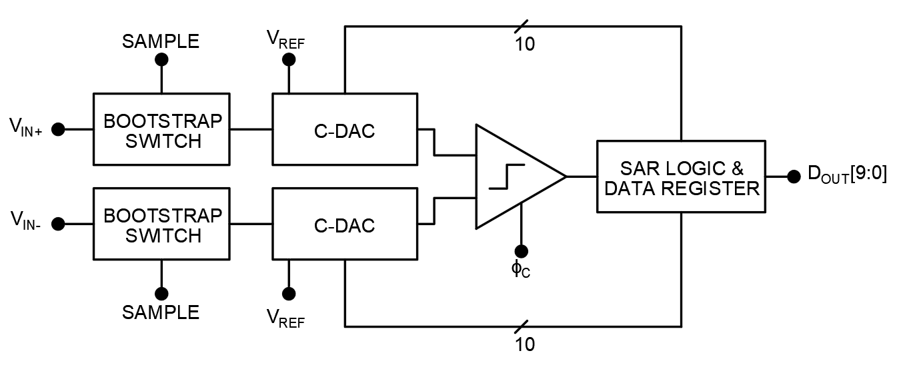
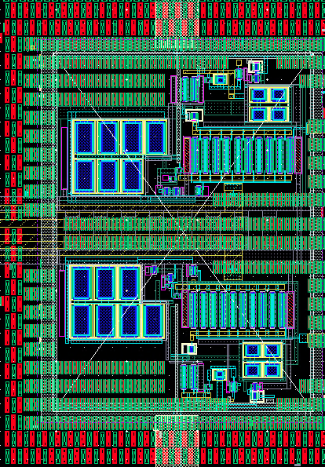

Successive Approximation Register Analog-to-Digital Converter
A Successive Approximation Register Analog-to-Digital Converter (SAR ADC) converts an analog voltage to
digital code by performing a binary search. Put simply, the ADC starts with a guess of the analog voltage
value, then repeatedly refines this guess by comparing it to the true value. The core components of a SAR ADC
are a sample-and-hold circuit, a comparator, a digital-to-analog converter (DAC), and the control logic. This
page features a SAR ADC designed by my team at Carnegie Mellon University and taped out in a 28-nm CMOS
process in 2020.
SAR ADC Block Diagram

Each component in the SAR ADC is outlined in red below. The bootstrap switch, combined with the capacitive
digital-to-analog converter (CDAC) comprise a sample-and-hold circuit. The bootstrap switch utilizes feedback
to keep the drain to source voltage of the sampling switch constant. This constant Vds across the
sampling switch gives the bootstrap switch good linearity, making it an ideal circuit for analog data
aquisition. The split-capacitor charge redistribution DAC uses binary weighted capacitors with a unit size
~1fF. These capacitors were implemented as MOMCAPs on the metal 6 layer.
A Comparator is a circuit that compares two voltages. The role of a comparator in a SAR ADC is to
compare the current estimation of the input to the true input. More accurately, the comparator in this ADC
tells us the polarity of our error after each loop update. Because of the high speed and low voltage overhead
of this design, the speed and noise performance of the comparator are critical. The comparator shown here
operates at speeds over 1 GHz while contributing minimal noise to each measurement.
This comparator was laid out following the design rules for a 28nm process. Close attention has been paid to
mitigate the effects of parasitics and process gradients. Dummy devices and interdigitated devices help
minimize the effects of process gradients, and improve matching.
Bootstrap Switch Layout
